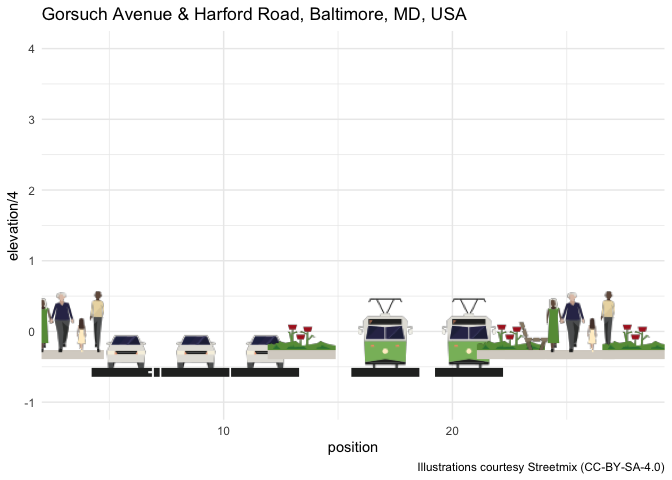

The goal of streetmixr is to provide access to the Streetmix API. What is Streetmix? Streetmix is a web-based open-source tool that enables people to “design, remix, and share” street designs. Users can “add bike paths, widen sidewalks or traffic lanes” and learn how street design impacts communities.
Streetmix uses the Axios library to support the following end-points:
- getStreet,
- deleteStreetImage
- getGalleryForUser
- getGalleryForAllStreets
- getSentimentSurveyStreet
- postSentimentSurveyVote
- putSentimentSurveyComment
The get_streets function supports getStreet (using url or street_id), getGalleryForUser (using user_id), and getGalleryForAllStreets (using the count parameter).
This package also provides an index of the Streetmix illustrations available under a CC-BY-SA license. I also hope to develop some utility functions to support visualization of street segment data and add them to this package in the future.
Issues, pull requests, or feedback are all welcome.
Note that this package is an independent project by me, Eli Pousson, and is not directly sponsored or supported by the Streetmix development team. Please consider supporting the Streetmix project on OpenCollective or by signing up for the new Streetmix+ subscription service.
Installation
You can install the development version of streetmixr like so:
# pak::pkg_install("elipousson/streetmixr")Example
The get_street function allows you to download data on a street using a Streetmix url:
# Get data on Streetmix street
street <-
get_street(
url = "https://streetmix.net/eli.pousson/6/harford-road-south-of-gorsuch-avenue-1950s",
return = "street"
)The segment data for a street can be analyzed or plotted, as this example shows:
# Example showing plot based on segment width
street$segments %>%
group_by(type) %>%
summarise(
pct_width = sum(width) / street$width
) %>%
ggplot() +
geom_col(aes(x = type, y = pct_width)) +
scale_y_continuous(labels = scales::label_percent()) +
coord_flip() +
theme_minimal(base_size = 14)
This data can also be combined with the illustration. This example uses the {ggsvg} package to display the illustrations in their approximate positions:
segments <- street$segments %>%
left_join(illustrations, by = c("type" = "name")) %>%
mutate(
position = cumsum(width)
)
segments$url <- sapply(segments$url, function(x) {
paste(readLines(x), collapse = "\n")
})
ggplot(data = segments) +
ggsvg::geom_point_svg(
mapping = aes(x = position, y = elevation / 4, svg = url), size = 18
) +
scale_y_continuous(
limits = c(-1, 4)
) +
labs(
title = street$location$label,
caption = "Illustrations courtesy Streetmix (CC-BY-SA-4.0)"
) +
theme_minimal()
You can also get streets by user id or download a selection of recent streets using the `count` parameter:
get_street(user_id = "eli.pousson")$streets %>%
select(-c(creatorIp, data)) %>%
knitr::kable()| id | namespacedId | status | name | creatorId | originalStreetId | clientUpdatedAt | createdAt | updatedAt |
|---|---|---|---|---|---|---|---|---|
| 7d78276e-d612-4949-a1fc-bff7a6264b32 | 11 | ACTIVE | Sample Mixed Use Path with Green Space | eli.pousson | 48094c9a-d019-4495-b183-df202da0f2d9 | 2023-05-04T19:42:15.333Z | 2024-04-18T19:43:50.532Z | 2024-04-18T19:43:50.741Z |
| 2c3905bf-1729-492b-8741-e5ad1298a4b6 | 10 | ACTIVE | Harford Road south of Gorsuch Avenue (1950s) | eli.pousson | 587bc700-3159-11ec-896a-75aec116883c | 2021-10-20T03:58:55.769Z | 2023-10-19T20:37:28.278Z | 2023-10-19T20:37:28.420Z |
| 587bc700-3159-11ec-896a-75aec116883c | 6 | ACTIVE | Harford Road south of Gorsuch Avenue (1950s) | eli.pousson | 32bfe550-3159-11ec-896a-75aec116883c | 2021-10-20T03:58:55.769Z | 2021-10-20T03:53:54.809Z | 2023-07-31T14:22:04.892Z |
| 48094c9a-d019-4495-b183-df202da0f2d9 | 9 | ACTIVE | Sample Mixed Use Path with Green Space | eli.pousson | 13b8567a-223d-4fde-a7ed-100375e1ddc9 | 2023-05-04T19:42:15.333Z | 2023-07-31T14:21:52.653Z | 2023-07-31T14:21:52.812Z |
| 13b8567a-223d-4fde-a7ed-100375e1ddc9 | 8 | ACTIVE | Sample Mixed Use Path with Green Space | eli.pousson | 874d79aa-d56f-4930-a3bb-32bafdb9006a | 2023-05-04T19:42:15.333Z | 2023-05-04T17:29:57.796Z | 2023-05-04T19:42:15.927Z |
| b26529c0-c1ad-11ec-877c-abfad556cfc6 | 7 | ACTIVE | N. Conkling Street (north of Eastern Avenue) | eli.pousson | f73c9f80-c1a6-11ec-877c-abfad556cfc6 | 2022-04-28T18:59:47.530Z | 2022-04-21T20:00:30.820Z | 2022-04-28T18:59:48.282Z |
| 32bfe550-3159-11ec-896a-75aec116883c | 5 | ACTIVE | Harford Road south of Gorsuch Avenue | eli.pousson | 018fb100-3158-11ec-896a-75aec116883c | 2021-10-20T03:52:28.031Z | 2021-10-20T03:52:51.511Z | 2021-10-20T03:52:51.654Z |
| 7e06c6b0-4793-11eb-a7cc-b5a263b6bae7 | 4 | ACTIVE | NA | eli.pousson | 0f21bd30-90d3-11ea-946a-abc0544fc0fc | 2020-05-08T02:23:59.740Z | 2020-12-26T16:00:36.548Z | 2020-12-26T16:00:37.959Z |
| 46ce4c10-918e-11ea-98a3-a330b250095e | 3 | ACTIVE | NA | eli.pousson | NA | 2020-05-09T00:44:42.367Z | 2020-05-09T00:44:44.793Z | 2020-05-09T00:44:45.273Z |
| 88ee8bf0-90d5-11ea-946a-abc0544fc0fc | 2 | ACTIVE | Greenmount Avenue at E. 25th Street | eli.pousson | 41428880-90d3-11ea-946a-abc0544fc0fc | 2020-05-09T00:33:43.827Z | 2020-05-08T02:42:18.875Z | 2020-05-09T00:33:46.378Z |
| 33f06dd0-90d5-11ea-946a-abc0544fc0fc | 1 | ACTIVE | NA | eli.pousson | 0f21bd30-90d3-11ea-946a-abc0544fc0fc | 2020-05-08T02:23:59.740Z | 2020-05-08T02:39:56.252Z | 2020-05-08T02:39:56.842Z |